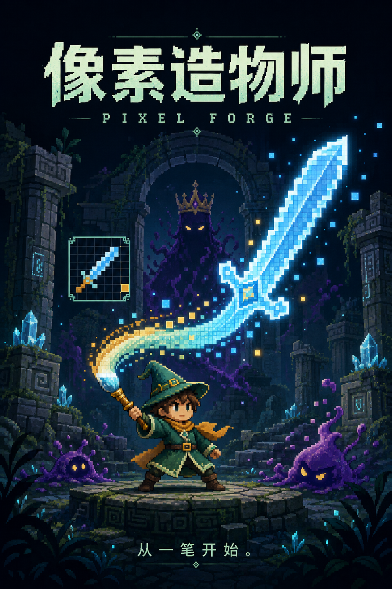
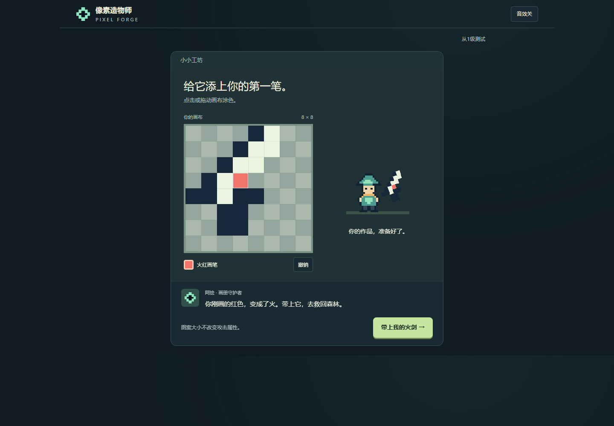

形状用于表达
武器长、宽和面积不直接改变伤害。攻击形式由挥刃、回旋器、发射器、长枪、重锤及所选工艺决定，让玩家能画喜欢的轮廓。
把自己画的武器带进战斗，再用战斗获得的新选择继续创作。

我负责玩法目标、规则取舍和迭代方向；AI 辅助代码、素材与文档制作，最终内容由我筛选和调整。
武器长、宽和面积不直接改变伤害。攻击形式由挥刃、回旋器、发射器、长枪、重锤及所选工艺决定，让玩家能画喜欢的轮廓。
火、冰、电按有效元素像素比例分配能力；中性色用于装饰。对应两种元素各占至少 25% 时，可选装一项混色配方。
森林的草地可燃烧和蔓延；瀑布湿区增强电弧、削弱灼烧。关前看到地图与装备，玩家才有依据决定带什么。
画布从 8×8 逐步扩至 24×24；颜色、工具和武器类型逐步开放。第四级加入备用槽，避免一开始同时解释全部系统。
首胜之后，玩家不一定意识到原来的武器仍可使用，或者每关都能换装。武器与地图信息也需要更清晰的层级。
首胜试用后进入武器库，提示“选把武器再出发”；首次通过点选装备学习规则。后续每关领取强化后都回到同一武器库，地图、主备装备与出发按钮集中呈现。
界面同步减少常驻说明，将攻击数值与改造细节折叠，手机端固定主要操作栏。目标是让第一次游玩通过操作建立理解。

已有十关流程、武器库与工坊、教学、元素地形、奖励和本地保存。九月迭代记录包含新档教学、换装与地形功能检查。
下一步观察首次独立换装率、首次配方理解、不同地图的武器选择与后期失败原因。现有功能验收不能代替玩家测试或证明留存提升。
阅读九月引导迭代记录